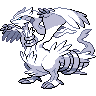

📖 英語版の図鑑説明
According to myth, if people ignore truth and let themselves become consumed by greed, Reshiram will arrive to burn their kingdoms down.
日本語訳
人々が真実を無視し貪欲に溺れると現れ、王国を焼き尽くすと伝えられる。
📝 この図鑑文に出てくる英単語
| 英単語 | 意味 | 品詞 | レベル |
|---|---|---|---|
| according | (according to で)〜によると | 形容詞 | 中3 |
| myth | 神話 | 名詞 | 高校 |
| ignore | 無視する | 動詞 | 高校 |
| truth | 真実 | 名詞 | 中3 |
| consumed | 食べた、消費した | 動詞 | 高校 |
| greed | 欲張り | 名詞 | 大学 |
| burn | 燃やす、燃える | 動詞 | 中3 |
| kingdoms | 王国(複数形) | 名詞 | 高校 |
文法ポイント let themselves become は「let + 人・もの + 動詞の原形」で「〜に…させてあげる、…させておく」という意味です。
if 〜 は「もし〜ならば」という条件を表す接続詞です。
📊 レシラムの種族値
HP100
こうげき120
ぼうぎょ100
とくこう150
とくぼう120
すばやさ90
合計 680
❓ よくある質問
- レシラムの英語名は？
- レシラムの英語名は「Reshiram」です。
- レシラムは英語版の図鑑でどう説明されている？
- 「According to myth, if people ignore truth and let themselves become consumed by greed, Reshiram will arrive to burn their kingdoms down.」と書かれています。日本語にすると「人々が真実を無視し貪欲に溺れると現れ、王国を焼き尽くすと伝えられる。」という意味です。
レシラムは第5世代（イッシュ地方）のポケモンです。第5世代（イッシュ地方）の英語名一覧 →